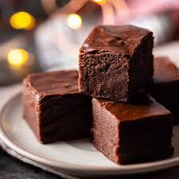

Home

Description
Traditional chocolate fudge relies on boiling sugar, butter, and milk to a precise "soft-ball" stage, then letting it cool undisturbed. This careful temperature control ensures that microscopic sugar crystals form during the final stirring process, giving the fudge its iconic, ultra-creamy, melt-in-your-mouth texture.
For a quick and foolproof alternative, a popular shortcut recipe combines semi-sweet chocolate chips with sweetened condensed milk and butter. By melting these ingredients together over low heat, you completely bypass the risky boiling process while still achieving a rich, dense, and deliciously fudgy square.
Ingredients
- Semi-sweet chocolate chips: 3 cups (or 18 ounces)
- Sweetened condensed milk: 1 can (14 ounces)
- Unsalted butter: 2 tablespoons
- Vanilla extract: 1 teaspoon
- Fine sea salt: ¼ teaspoon
Steps
- Line an 8x8 inch square baking pan with parchment paper, leaving a slight overhang on the sides to easily lift the fudge out later.
- Combine the chocolate chips, sweetened condensed milk, and unsalted butter in a medium, heavy-bottomed saucepan over low heat.
- Stir the mixture constantly with a rubber spatula until the chocolate chips are completely melted and the mixture is entirely smooth and glossy.
- Remove the saucepan from the heat source immediately to prevent the chocolate from scorching.
- Stir in the vanilla extract and sea salt until fully incorporated into the thick chocolate mixture.
- Scrape the hot fudge into the prepared baking pan, spreading it evenly and smoothing the top surface with your spatula.
- Place the pan in the refrigerator for at least 2 hours, or until the fudge is completely firm and set.
- Lift the fudge out of the pan using the parchment paper overhang, place it on a cutting board, and use a sharp knife to slice it into small, rich squares.